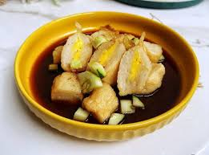

Tugu Khatulistiwa adalah monumen penanda garis khatulistiwa (garis ekuator) yang terletak di Kota Pontianak, Kalimantan Barat, Indonesia. Monumen ini dibangun pertama kali tahun 1928 oleh tim ekspedisi Belanda sebagai penanda titik lintasan garis khatulistiwa, lalu beberapa kali diperluas dan diperbaiki hingga bentuknya seperti sekarang dengan kubah pelindung.
Ciri khas Tugu Khatulistiwa adalah empat tiang kayu ulin besar dan bola dunia di bagian atasnya. Di tempat ini, setiap tanggal 21–23 Maret dan 21–23 September (saat ekuinoks), matahari tepat berada di atas kepala sehingga bayangan benda di sekitar tugu menghilang sesaat — fenomena ini menjadi daya tarik wisata utama.
Kini Tugu Khatulistiwa menjadi ikon Kota Pontianak dan destinasi wisata edukasi yang menunjukkan pentingnya garis khatulistiwa bagi ilmu geografi dan astronomi.

Gambar 2 — Pempek
Pempek adalah makanan khas Palembang, Sumatera Selatan yang terbuat dari ikan giling (biasanya ikan tenggiri) yang dicampur dengan tepung sagu, kemudian dibentuk dan direbus atau digoreng. Pempek disajikan bersama kuah cuko (saus khas berwarna cokelat kehitaman yang rasanya asam, manis, dan pedas) yang terbuat dari gula merah, cabai, bawang putih, dan asam.
Ada berbagai jenis pempek, antara lain pempek kapal selam (berisi telur), pempek lenjer (bentuk panjang), pempek adaan (bulat), pempek kulit, dan lain-lain. Makanan ini bukan hanya kuliner khas Palembang, tetapi sudah populer di seluruh Indonesia sebagai jajanan gurih yang kaya rasa dan mengenyangkan.
Gambar 3 — Angklung
Angklung adalah alat musik tradisional khas Jawa Barat (Sunda) yang terbuat dari bambu dan dimainkan dengan cara digoyang atau digetarkan sehingga menghasilkan bunyi yang khas. Setiap angklung hanya menghasilkan satu nada tertentu, sehingga untuk memainkan sebuah lagu diperlukan beberapa orang pemain yang masing-masing memegang angklung dengan nada berbeda.
Angklung biasanya dimainkan secara berkelompok, sehingga melatih kekompakan dan kerja sama. Alat musik ini sudah dikenal sejak berabad-abad lalu di masyarakat Sunda sebagai pengiring upacara adat dan hiburan rakyat. Kini angklung sering ditampilkan dalam pertunjukan seni, pendidikan, dan festival budaya.
Pada tahun 2010, UNESCO menetapkan Angklung sebagai Warisan Budaya Takbenda Dunia dari Indonesia.
Gambar 4 — Gajah sumatera
Gajah Sumatera (Elephas maximus sumatranus) adalah subspesies gajah Asia yang hidup di Pulau Sumatera, Indonesia. Gajah ini merupakan gajah asli Indonesia dan termasuk satwa endemik. Ukurannya lebih kecil dibandingkan gajah Asia di India atau Thailand: tinggi bahu dewasa sekitar 2–3 meter dengan berat 2–4 ton. Kulitnya cenderung lebih terang, telinganya lebih kecil, dan gadingnya relatif pendek (betina biasanya tidak bergading).
Gajah Sumatera hidup di hutan hujan tropis, rawa gambut, dan padang rumput, makan berbagai jenis tumbuhan, rumput, buah, dan kulit kayu. Satwa ini berperan penting menjaga ekosistem hutan dengan menyebarkan biji-bijian. Namun populasinya terus menurun akibat hilangnya habitat dan perburuan liar, sehingga IUCN menetapkannya sebagai satwa Kritis (Critically Endangered). Gajah Sumatera dilindungi oleh hukum Indonesia dan upaya konservasi terus dilakukan di taman nasional dan pusat konservasi gajah.
Gambar 5 — Tari saman
Tari Saman adalah tarian tradisional khas suku Gayo di Aceh, Indonesia, yang terkenal karena gerakannya yang sangat cepat, kompak, dan serempak. Tarian ini biasanya dibawakan oleh laki-laki yang duduk berderet rapi sambil bertepuk tangan, menepuk dada, dan melakukan gerakan tubuh yang dinamis sesuai irama.
Awalnya Tari Saman digunakan sebagai media dakwah Islam dan penyampaian nasihat atau pesan moral oleh para ulama. Gerakannya menggambarkan kebersamaan, kedisiplinan, dan kekompakan masyarakat Aceh. Tarian ini sering dibawakan pada acara adat, penyambutan tamu, maupun perayaan hari besar.
Pada tahun 2011, UNESCO menetapkan Tari Saman sebagai Warisan Budaya Takbenda Dunia yang perlu dilindungi. Kini Tari Saman menjadi salah satu ikon budaya Aceh dan Indonesia yang dikenal hingga mancanegara.